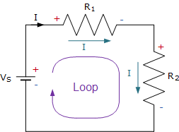
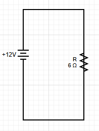

Kirchhoff's Voltage Law (KVL) is a fundamental principle in circuit analysis that states the sum of all voltage drops around any closed loop in a circuit must equal zero. This law is based on the conservation of energy and is essential for analyzing complex circuits.
Definition of KVL
$$\sum V = 0$$
Voltage drop from each resistor:
$$V_{drop} = iR$$
Kirchhoff's Voltage Law states that the algebraic sum of all voltage drops around any closed loop in a circuit equals zero. This means that the sum of voltage rises equals the sum of voltage drops.
Symbol: \(\sum V = 0\)
Units: Volts (V)
Principle: Conservation of energy
Application: Single-loop and multi-loop circuits

Voltage drops around a closed loop must sum to zero.
The loop starts from the negative terminal (0 V). It then jumps up by Vs and goes to R1 where the voltage drops. Then it goes through the next resistor and voltage drops to 0. It then keeps going through the loop and when it reaches the battery it jumps back to Vs
Understanding KVL
Energy Conservation
Energy Source: Batteries and power supplies provide energy
Energy Consumption: Resistors and other components consume energy
Conservation: Energy gained = Energy lost
Voltage Representation: Voltage represents energy per unit charge
Physical Interpretation
Voltage Rise: Energy gained (batteries, power supplies)
Voltage Drop: Energy lost (resistors, loads)
Net Result: Total energy change around loop = 0
Direction: Choose a direction and stick to it consistently
🎯 KVL Statement
Around any closed loop in a circuit, the algebraic sum of all voltage drops equals zero.
This means: Sum of voltage rises = Sum of voltage drops
Sign Conventions for KVL
📏 Sign Convention Rules
Choose Direction: Pick a direction to traverse the loop
Voltage Rise (+): When moving from - to + terminal of battery
Voltage Drop (-): When moving from + to - terminal of battery
Resistor Drop (-): When moving in direction of current through resistor
Resistor Rise (+): When moving against direction of current through resistor
KVL Equation Formulation
Step-by-Step Process
Choose Loop Direction: Pick clockwise or counterclockwise
Identify Components: List all voltage sources and resistors
Assign Signs: Use sign convention for each component
Write Equation: Sum all voltages and set equal to zero
Solve: Use algebra to find unknown quantities
Example: Simple Single-Loop Circuit
Problem: Find the current in the circuit with a 12V battery and 6Ω resistor.

Simple single-loop circuit
Step 1: Choose Loop Direction
Let's traverse the loop clockwise.
Step 2: Write KVL Equation
Starting from the battery and going clockwise:
$$+12V - I(6Ω) = 0$$
Explanation:
+12V: Voltage rise across battery (moving from - to +)
-I(6Ω): Voltage drop across resistor (moving in direction of current)